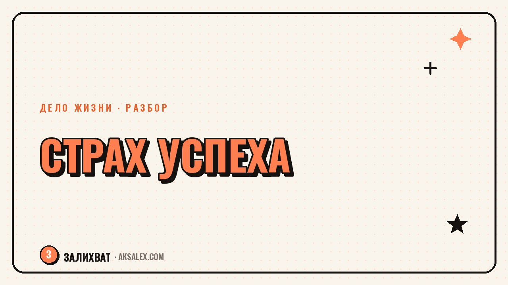

Страх успеха: почему ты саботируешь свои цели

Бывает так: ты хочешь перемен, строишь план, а потом раз за разом откладываешь именно тот шаг, который реально сдвинет дело с места. Не из лени - находится срочное дело, не то настроение, недостаточно готовности. Это может быть не прокрастинация в привычном смысле, а страх успеха - скрытое сопротивление, которое включается, когда цель начинает быть реально достижимой. Разберём, как его узнать и что с ним делать, без коучингового пафоса и обещаний быстрых решений.
Что такое страх успеха и почему он менее заметен, чем страх неудачи
О страхе неудачи говорят часто: он понятен и логичен - боишься провалиться, опозориться, потратить время впустую. Страх успеха работает иначе и поэтому дольше остаётся незамеченным: ты не боишься не получить результат, ты боишься того, что будет, если результат получится. Новая ответственность, видимость, ожидания от других людей, необходимость держать уровень - всё это может пугать не меньше провала.
Часто страх успеха маскируется под рациональные отговорки: «сейчас не время», «нужно ещё подготовиться», «я пока недостаточно знаю». Эти формулировки звучат разумно, и именно поэтому их легко принять за объективную оценку ситуации, а не за защитную реакцию. Отличить одно от другого помогает один вопрос: сколько раз подряд повторяется это «не время» на одном и том же шаге.
Как это выглядит на практике
- Ты готов почти всё, кроме последнего шага - его откладываешь неделями
- После небольшого успеха появляется тревога, а не радость
- Находишь новую задачу «для подготовки» вместо того, чтобы действовать
- Сравниваешь себя с теми, кто уже на твоём желаемом уровне, и теряешь уверенность
- Избегаешь разговоров о своих планах, чтобы не создавать ожиданий
Откуда берётся это сопротивление
У страха успеха почти всегда есть конкретная причина, а не абстрактная «боязнь всего нового». Часто это связано с опытом из прошлого: заметность в детстве приводила к критике, а не к поддержке, или успех одного члена семьи когда-то вызывал зависть и отдаление близких. Мозг запоминает такие паттерны и начинает воспринимать рост как угрозу отношениям, даже если текущая ситуация совсем другая.
Вторая частая причина - страх не справиться с новым уровнем ответственности. Пока ты никому не известен как эксперт, с тебя не спрашивают по высокой планке. Как только появляется результат, растут и ожидания - твои собственные и чужие. Это реальная нагрузка, и избегание первого шага иногда работает как способ не сталкиваться с ней заранее.
Страх успеха редко звучит как страх. Он звучит как здравый смысл: «подожду более удачного момента», «доделаю ещё пару вещей перед тем как показать это людям».
Как отличить страх успеха от реальной неготовности
Не всякое «я пока не готов» - это сопротивление. Иногда действительно не хватает конкретного навыка или ресурса, и это нормально признать. Разница в том, что реальная неготовность имеет чёткий план закрытия: ты знаешь, чего не хватает и что конкретно сделать, чтобы это получить. Страх успеха выглядит как бесконечная подготовка без финальной точки - сколько ни готовься, момент действия не наступает.
Полезное упражнение: напиши, что именно должно произойти, чтобы ты почувствовал готовность сделать шаг. Если ответ конкретный («пройти курс по теме X, это займёт 3 недели») - перед тобой реальная задача. Если ответ размытый («быть увереннее», «знать больше») - это чаще признак сопротивления, а не нехватки ресурса.
Вопросы к себе для проверки
- Что конкретно изменится, когда я буду «готов» - могу ли я это описать?
- Сколько раз я уже откладывал именно этот шаг?
- Что самое страшное произойдёт, если получится?
- Кто в моём окружении может отреагировать на мой успех неожиданно для меня?
- Готов ли я взять ответственность за результат, если он придёт быстрее, чем я ожидал?
Что делать, если узнал себя в этом описании
Первый шаг - не бороться со страхом, а назвать его вслух, хотя бы себе. Фраза «я боюсь не провала, а того, что будет после успеха» часто снимает часть напряжения, потому что убирает путаницу: ты перестаёшь искать логическое объяснение и начинаешь работать с реальной причиной откладывания.
Дальше помогает разбить финальный шаг на маленькую часть, которая не требует полной готовности и не создаёт сразу большой заметности. Например, вместо «опубликовать большой анонс» - показать идею 2-3 близким людям и получить обратную связь в спокойной обстановке. Это снижает резкость перехода и даёт тебе почувствовать результат без немедленного давления ожиданий.
| Проявление | Что обычно стоит за этим | Что помогает |
|---|---|---|
| Откладываешь финальный шаг неделями | Страх новой ответственности | Разбить шаг на маленькую, не публичную часть |
| После успеха тревога, а не радость | Непривычность внимания к себе | Заранее продумать, как реагировать на похвалу |
| Ищешь ещё один курс перед стартом | Избегание момента проверки | Установить дату действия без условий |
| Молчишь о планах перед близкими | Страх чужой реакции на рост | Выбрать 1-2 человек для осторожного разговора |
Когда стоит обратиться за поддержкой
Если страх успеха связан с конкретным травматичным опытом - например, жёсткой критикой в прошлом или давними сложными отношениями в семье - самостоятельная работа с вопросами и небольшими шагами может не снять напряжение полностью. Это нормально, и это не повод винить себя за недостаточную силу воли.
В таких случаях разумно обратиться к психотерапевту, который поможет разобраться с источником сопротивления глубже, чем это можно сделать упражнениями из статьи. Эта статья не заменяет терапию и не ставит диагнозов - она про то, как заметить паттерн и начать с ним работать на уровне повседневных решений.
Частые вопросы
Как понять, что это именно страх успеха, а не обычная прокрастинация?
Обрати внимание, на каком шаге застреваешь: если это именно финальный, самый заметный шаг к результату, а не рутинные задачи вообще - вероятнее сопротивление успеху. Прокрастинация обычно равномерно касается разных дел, а не одного конкретного порога.
Почему после небольшого успеха появляется тревога вместо радости?
Это частый признак страха успеха: мозг воспринимает рост видимости и ответственности как угрозу, даже если объективно всё идёт хорошо. Такая тревога не означает, что с результатом что-то не так - она про непривычность новой роли.
Можно ли справиться со страхом успеха самостоятельно?
Частично да - помогает назвать страх вслух, разбить финальный шаг на маленькие части и честно отделить реальную неготовность от бесконечной подготовки. Если причина связана с глубоким прошлым опытом, лучше подключить психотерапевта.
Что делать, если близкие реагируют на успех не так, как хотелось бы?
Заранее продумай разговор с 1-2 людьми, чьё мнение важно, и будь готов, что реакция может быть сложной - это говорит об их собственных переживаниях, а не обязательно о ценности твоего результата.
Как разбить финальный шаг к цели, если он кажется слишком большим?
Найди версию этого шага, которая не требует полной публичности - покажи идею небольшому кругу людей, получи обратную связь, и только потом двигайся к более заметному действию. Это снижает резкость перехода без отказа от цели.
Раз тема оказалась полезной, вот что почитать следующим. Нейросети для стоматолога: протоколы приёма, памятки пациентам и документы клиники без лишней бумажной рутины.
Читать статью →а не вручную